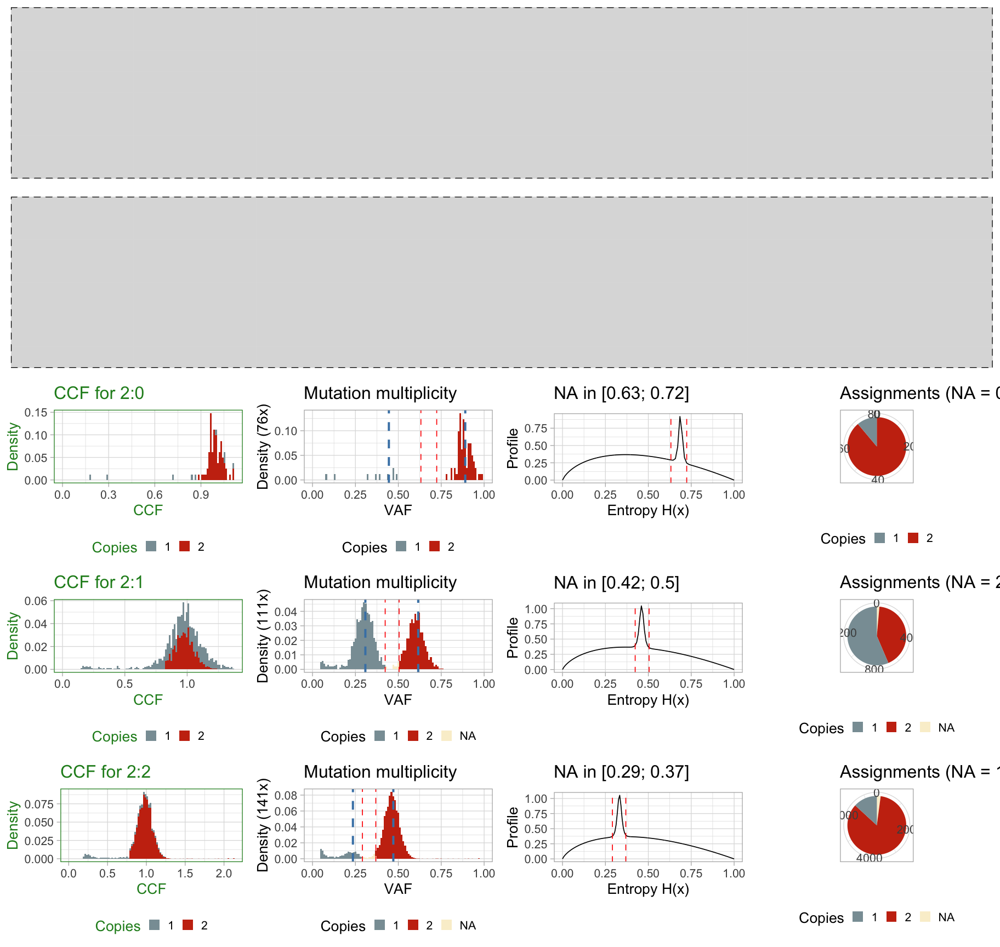
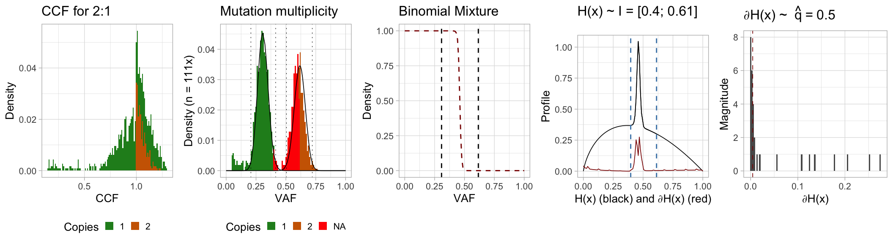
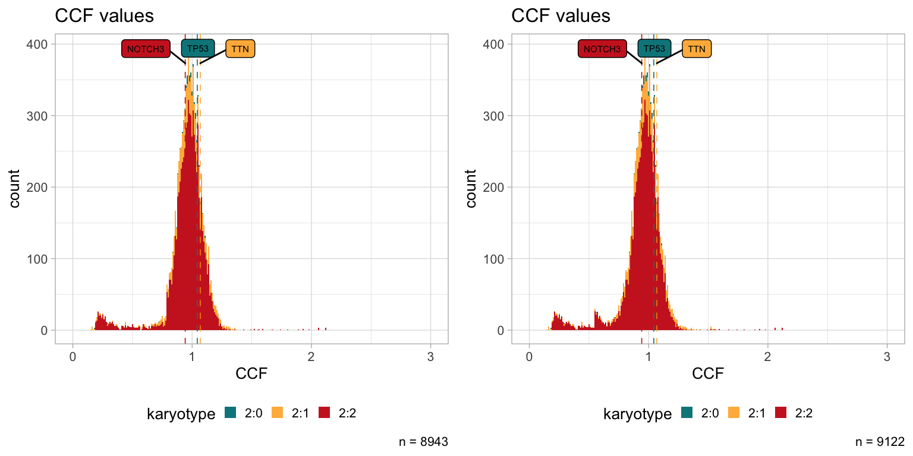

library(CNAqc)
#> [32m✓[39m Loading [32m[32mCNAqc[32m[39m, [3m[3m'Copy Number Alteration quality check'[3m[23m. Support : [3m[34m[3m[34m<https://caravagn.github.io/CNAqc/>[34m[3m[39m[23mCNAqc provides a function to compute mutation’s Cancer Cell Fractions (CCFs): compute_CCF. We suggest to use these to compare CCF estimates obtained with other tools.
The process of computing CCF values requires the computation of the “mutation multiplicity”, namely the number of copies of a mutation in a certain copy number segment. This is generally a difficult task which requires to account for tumour purity, copy number segments and tumour purity. Errors in this task propagate errors in CCF estimates, which in turn propagate in downstream analyses.
For this reason, CNAqc:
- limits the CCF computations to karyotypes that are usually “easier” -
'2:1','2:0'and'2:2'- where a mutation is either present in one or two copies, assuming that the aneuploidy state is directly achieved from a diploid genome; - limits the CCF computations to clonal copy number segments.
By design, computations on other karyotypes raise an error.
Mutation multiplicity
Expected VAF. Given the mutations that are mapped to a certain karyotype (e.g., 2:1), the expected Variant Allele Frequency (VAF) for mutations in \(m\) copies, with tumour purity \(\pi\) and segment ploidy \(p\) (number of copies of the minor and major allele) are given by \[
v = \dfrac{m \pi}{
2 (1 - \pi) + \pi p
} \, .
\] This formula is also used to determine the expected peaks in the peak-detection algorithm used to QC copy number calls in CNAqc (see the vignette “QC analysis via peaks detection”).
In this task we determine the value of \(m\) from the observed \(v\), the karyotype and tumour purity.
2-class mixture. CNAqc uses a statistical model with two Binomial distributions for the mutations happening before, and after aneuploudy. The density of these Binomial distributions are:
- peaked at \(v_1\) for \(m = 1\) (after aneuploidy) and \(v_2\) for \(m = 2\) (before aneuploidy).
- computed on the domain \([0, 1]\), after translating the read counts into allele frequencies. This is achieved fixing the number of trials of the Binomial process to the median coverage \(n\) of the mutations that map to the segments under investigation (e.g., the triploid segments);
Therefore, the assumptions in CNAqc are that 1) overdispersion of coverage is small to justify a Binomial instead of a Beta-Binomial model, and that 2) trials are well-represented by the median of the observed coverage.
CNAqc computes two Binomial densities \(\text{Bin}_1\) and \(\text{Bin}_2\) over the set of values \([0; n]\) with \(n\) number of trials and success probability \(v_i\), i.e. \[
\text{Bin}_i = p(s \mid n; v_i)
\] as the probability of finding \(s\) reads with the mutant allele at out of \(n\) (median depth), assuming the mutation expected frequency is \(v_i\) (notice that \(v_i\) includes the effect of tumour purity).
To finalize the densities of this mixed model CNAqc determines the absolute proportions of this mixture, which are used to scale the two theoretical Binomial densities. This process can be done in differnt ways; CNAqc uses a simple heuristic that counts how many mutations fall below the area of each density. The heuristics computes the 1% and 99% quantiles of those distributions, determing two ranges \(I_1 = [v_1^1; v_1^{99}]\) and \(I_2 = [v_2^1; v_2^{99}]\) so that:
- \(n_1\) are the number of mutations with VAF in \(I_1\);
- \(n_2\) are the number of mutations with VAF in \(I_2\);
Notice that these two intervals might overlap (i.e., it could be that \(v_1^{99} > v_2^{1}\)). This is however not a problem because the two numbers are normalized to create a complete 2-components Binomial mixture \[ M = \mu_1 * \text{Bin}_1 + (1 - \mu_1) * \text{Bin}_2 \] where \(\mu_1 = n_1/(n_1+n_2)\) are the normalized proportions.
Entropy-based assignments. Assigning mutation multiplicities is particularly difficult at the crossing of the two Binomial densities, because in that case some mutations that have true multiplicity \(m=1\) are actually mapped to \(m=2\), and viceversa. This creates false “bumps” in the CCF distribution, which could be interepreted either as miscalled copy-number segments or false clonal architectures.
CNAqc uses a entropy-based heuristic to determine which mutations can be confidently assigned a value of \(m\), and the heuristic is controlled by a user-defined parameter that represents a quantile.
The mutations with VAF in between \(v_1\) and \(v_2\) are difficult - those with VAF below \(v_1\) are clearly in one copy, those above \(v_2\) are in two copies. Note that this argument implicitely assumes that we are working with clonal copy number calls, a simplyfying assumption of this analysis in CNAqc.
CNAqc uses the entropy \(H(x)\) of the mixture’s latent variables to determine mutation multiplicities, as well as its numerical derivative \(\partial H(x)\) evaluated in the domain \([nv_1, nv_2]\). \[
H(x) = - p_x \log(p_x)
\] where \(p_x\) is \(M\)’s density at \(x\).
By construction, the derivative grows when the uncertainty of the assignments is higher, oscillating around low values in the leftmost and rightmost part of the evaluated spectrum, and peaking higher at the centre of the crossing of the two densities. This is assuming that segments calls are QCed properly via peak detection (see the Vignette).
The problem is therefore that of finding peaks in the derivative \(\partial H(x)\), which is done looking at a histogram of \(\partial H(x)\) and determinig the quantile \(\hat{q}\) (by default, the 90%). We expect most mutations to be confidently assigneable, and \(\hat{q}\) defines the cutoff for the assignment:
- values below this quantile represent areas of the frequency spectrum where the assignments are confident towards either one of the two mixture components;
- values above the quantile are the areas where we are not confident in the assignment.
CNAqc defines from the range \([nv_1, nv_2]\) the points:
- \(nv_1 \leq \hat{w}_1 < nv_2\) so that \(\hat{w}_1 = \min_{x}\{\partial_x H(x) > \hat{q}\}\);
- \(nv_1 < \hat{w}_2 \leq nv_2\) so that \(\hat{w}_2 = \max_{x}\{\partial_x H(x) > \hat{q}\}\).
Then:
- any mutation in the range \([nv_1, n\hat{w}_1]\) is considered having one mutation copy;
- any mutation in the range \([n\hat{w}_2, nv_2]\) is considered having two mutation copies;
- any mutation in the range \([n\hat{w}_1, n\hat{w}_2]\) is considered “Not Assignable” with confidence.
When CNAqc computes this heuristic it returns a plot of the entropy and marks the ranges \([n\hat{w}_1, n\hat{w}_2]\) determined by the quantile \(\hat{q}\). The user can then check if the quantile selected is too stringent or loose, and adjust the input parmeter accordingly.
Cancer Cell Fractions computation
CCF values, are computed as
\[
\text{CCF} =
\dfrac{
v[
(C - 2)\pi + 2
]
}
{
m \pi
}
\] where \(C\) is total segment ploidy (e.g., 3 for a 2:1 state).
Example computation
We work with the same object shown in CNAqc’s Introductory Vignette.
# Dataset available with the package -- see Getting Started.
print(x)
#> ── [43m[30m[ CNAqc ] [39m[49m n = 13141 mutations in [32m[32m267[32m[39m segments (267 clonal + 0 subclonal) ───────────────────────────────────────────
#> [36mℹ[39m Purity: 89% ~ Ploidy: 4.
#> [36mℹ[39m Mutation mapping (head): 7478 (2:2); 1893 (4:2); 1625 (3:2); 1563 (2:1); 312 (3:0); 81 (2:0)We run function compute_CCF to obtain the full analysis of CCF values, first with the default parameters and focusing only one karyotype 2:1.
#>
#> =-=-=-=-=-=-=-=-=-=-=-=-=-=-=-=-=-=-=-=-=-=-=-=-=-=-
#> Computing mutation multiplicity with entropy H(x)
#> =-=-=-=-=-=-=-=-=-=-=-=-=-=-=-=-=-=-=-=-=-=-=-=-=-=-
#> Binomial peaks
#> # A tibble: 2 x 4
#> mutation_multiplicity karyotype peak label
#> <dbl> <chr> <dbl> <chr>
#> 1 1 2:1 0.308 One copy
#> 2 2 2:1 0.616 Two copies
#> H(x) quantile 0.9
#> Median depth 111
#> Mixing proportions ([1, 99] quantiles): 0.554109589041096 0.445890410958904
#> H(x)-derived cutoffs 0.441441441441441 0.468468468468468
#>
#> =-=-=-=-=-=-=-=-=-=-=-=-=-
#> Summary CCF assignments
#> =-=-=-=-=-=-=-=-=-=-=-=-=-
#> # A tibble: 3 x 3
#> karyotype mutation_multiplicity assignments
#> <chr> <dbl> <int>
#> 1 2:1 1 886
#> 2 2:1 2 675
#> 3 2:1 NA 2
#> Note: NA ~ mutations not confidently assignable at q = 0.9
We can visually inspect the CCF estimates for the computed karyotypes. We can do that accessing the field x$CCF_estimates which contains the data and a plot reporting the result of the analysis, or using the getter functions CCF and plot_CCF.
The tibble of the data reports the computed values in column "CCF", and in column "mutation multiplicity".
#> # A tibble: 1,563 x 3
#> VAF mutation_multiplicity CCF
#> <dbl> <dbl> <dbl>
#> 1 0.558 2 0.905
#> 2 0.467 NA NA
#> 3 0.613 2 0.995
#> 4 0.529 2 0.859
#> 5 0.556 2 0.902
#> 6 0.336 1 1.09
#> 7 0.532 2 0.864
#> 8 0.261 1 0.848
#> 9 0.567 2 0.920
#> 10 0.0794 1 0.258
#> # … with 1,553 more rows
The plot is a ggpubr-assembled figure, which in this case contains only the estimates for one karyotype.

The plot shows all the quantities described above; from left to right the plot shows
- the CCF histogram, coloured by mutation multiplicity;
- the histogram of the input VAF, coloured by mutation multiplicity;
- the probability of being assigned to the first mixture components (\(\text{Bin}_1\)), and the two Binomial peaks;
- the entropy profile \(H(x)\), its derivative \(\partial H(x)\) and the range determined by the input quantile \(\hat{q}\);
- the derivative magnitued and its quantile \(\hat{q}\).
In this case we see for instance that \(\hat{q} = 0.9\) (default value) is a little bit off the required value, because the determined range \(I\) is not fully including the peak in the entropy values. However, we see that beacuse the data quality is high the two Binomial distributions are well separated. Therefore even with this parameter value we still obtain perfectly reasonable mutation multiplicities and CCF estimates.
We inspect also the remaining karyotypes, and find a similar satisfactory result.
#>
#> =-=-=-=-=-=-=-=-=-=-=-=-=-=-=-=-=-=-=-=-=-=-=-=-=-=-
#> Computing mutation multiplicity with entropy H(x)
#> =-=-=-=-=-=-=-=-=-=-=-=-=-=-=-=-=-=-=-=-=-=-=-=-=-=-
#> Binomial peaks
#> # A tibble: 2 x 4
#> mutation_multiplicity karyotype peak label
#> <dbl> <chr> <dbl> <chr>
#> 1 1 2:1 0.308 One copy
#> 2 2 2:1 0.616 Two copies
#> H(x) quantile 0.9
#> Median depth 111
#> Mixing proportions ([1, 99] quantiles): 0.554109589041096 0.445890410958904
#> H(x)-derived cutoffs 0.441441441441441 0.468468468468468
#>
#> =-=-=-=-=-=-=-=-=-=-=-=-=-=-=-=-=-=-=-=-=-=-=-=-=-=-
#> Computing mutation multiplicity with entropy H(x)
#> =-=-=-=-=-=-=-=-=-=-=-=-=-=-=-=-=-=-=-=-=-=-=-=-=-=-
#> Binomial peaks
#> # A tibble: 2 x 4
#> mutation_multiplicity karyotype peak label
#> <dbl> <chr> <dbl> <chr>
#> 1 1 2:0 0.445 One copy
#> 2 2 2:0 0.89 Two copies
#> H(x) quantile 0.9
#> Median depth 76
#> Mixing proportions ([1, 99] quantiles): 0.0933333333333333 0.906666666666667
#> H(x)-derived cutoffs 0.657894736842105 0.710526315789474
#>
#> =-=-=-=-=-=-=-=-=-=-=-=-=-=-=-=-=-=-=-=-=-=-=-=-=-=-
#> Computing mutation multiplicity with entropy H(x)
#> =-=-=-=-=-=-=-=-=-=-=-=-=-=-=-=-=-=-=-=-=-=-=-=-=-=-
#> Binomial peaks
#> # A tibble: 2 x 4
#> mutation_multiplicity karyotype peak label
#> <dbl> <chr> <dbl> <chr>
#> 1 1 2:2 0.235 One copy
#> 2 2 2:2 0.471 Two copies
#> H(x) quantile 0.9
#> Median depth 141
#> Mixing proportions ([1, 99] quantiles): 0.0946892325649256 0.905310767435074
#> H(x)-derived cutoffs 0.319148936170213 0.347517730496454
#>
#> =-=-=-=-=-=-=-=-=-=-=-=-=-
#> Summary CCF assignments
#> =-=-=-=-=-=-=-=-=-=-=-=-=-
#> # A tibble: 8 x 3
#> karyotype mutation_multiplicity assignments
#> <chr> <dbl> <int>
#> 1 2:0 1 9
#> 2 2:0 2 72
#> 3 2:1 1 886
#> 4 2:1 2 675
#> 5 2:1 NA 2
#> 6 2:2 1 1013
#> 7 2:2 2 6427
#> 8 2:2 NA 38
#> Note: NA ~ mutations not confidently assignable at q = 0.9

Just for example, this is how CCF values would have changed if we had used different value of \(\hat{q}\).
